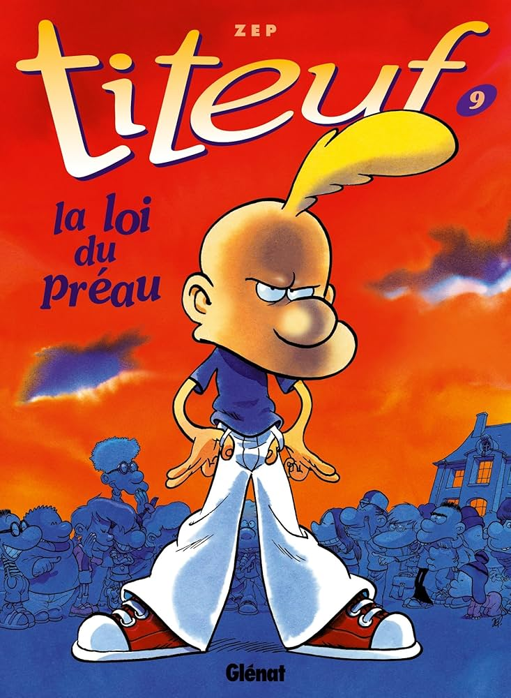

Titeuf est une franchise médiatique de bandes dessinées suisse créée par Philippe Chappuis, dit Zep, en 1992. Elle esquisse l'histoire d'un jeune garçon nommé Titeuf et de la vision qu'il a des attitudes et institutions des adultes. Physiquement, le personnage est reconnaissable à sa mèche blonde. La série est adaptée en série d'animation à partir de 2001, puis en film, intitulé Titeuf, le film en 2011.
| Nom | Image | Prix |
| BD Titeuf : La loi du préau |  | 5,99€ |